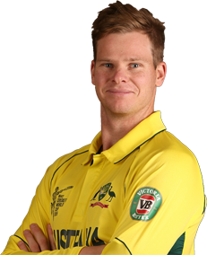

INDIA
INDIA
 CAPTAIN: VIRAT KOHLI
India is ranked first in Test, second in ODIs and fifth in T20Is by the ICC.Virat Kohli is the current captain of the team across all formats, while the head coach is Ravi Shastri.The Indian cricket team has rivalries with other Test-playing nations, most notably with Pakistan, the political arch-rival of India. However, in recent times, rivalries with nations like Australia and England have also gained prominence.
CAPTAIN: VIRAT KOHLI
India is ranked first in Test, second in ODIs and fifth in T20Is by the ICC.Virat Kohli is the current captain of the team across all formats, while the head coach is Ravi Shastri.The Indian cricket team has rivalries with other Test-playing nations, most notably with Pakistan, the political arch-rival of India. However, in recent times, rivalries with nations like Australia and England have also gained prominence.
They have won the Cricket World Cup twice – in 1983 under the captaincy of Kapil Dev and in 2011 under the captaincy of Mahendra Singh Dhoni. After winning the 2011 World Cup, India became only the third team after West Indies and Australia to have won the World Cup more than once.
The team was undefeated in 34 consecutive World Cup matches until 19 March at the 2011 Cricket World Cup where Pakistan beat them by 4 wickets.Australia have also won the ICC Champions Trophy twice – in 2006 and in 2009 – making them the first and the only team to become back to back winners in the Champions Trophy tournaments
The current Test, One-day and Twenty20 captain is Kane Williamson, who replaced Brendon McCullum who announced his retirement in late December, 2015. The national team is organised by New Zealand Cricket.